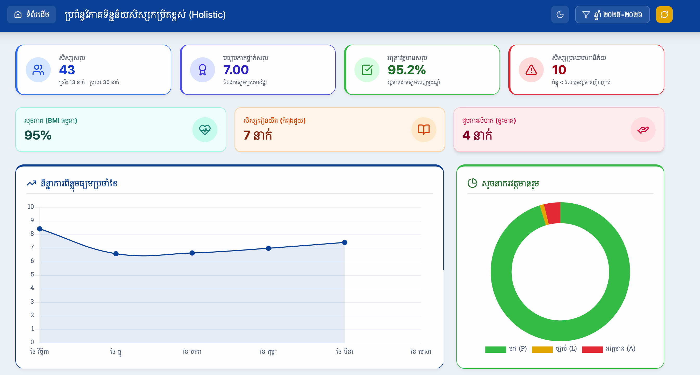
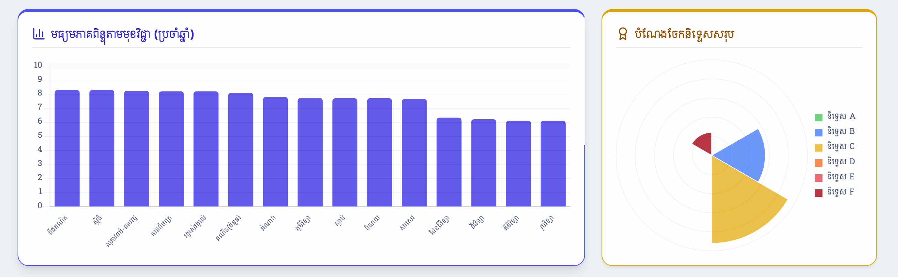
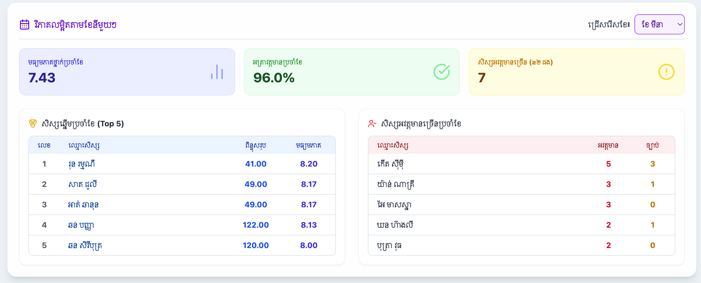
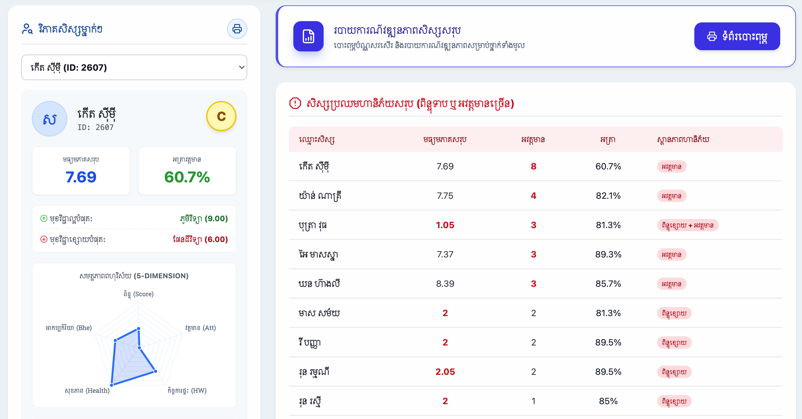
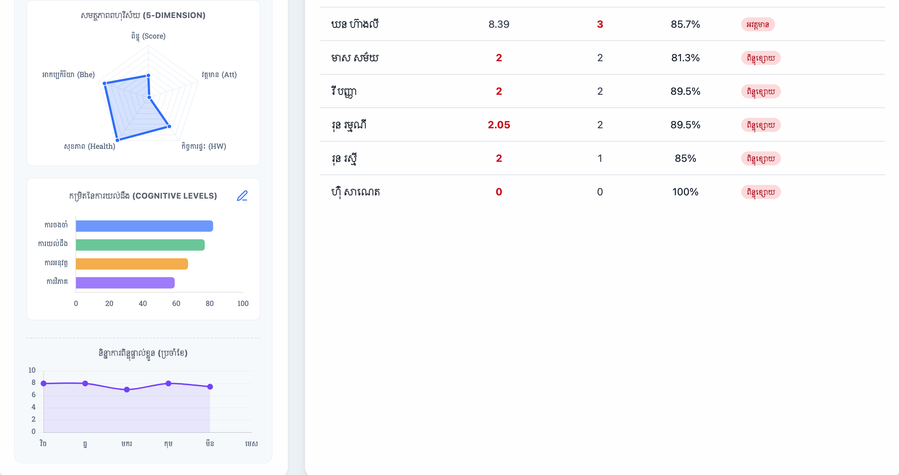

សៀវភៅណែនាំនេះត្រូវបានរៀបចំឡើងយ៉ាងពិសេស ដើម្បីជួយលោកគ្រូអ្នកគ្រូឱ្យយល់ច្បាស់ពីរបៀបអានក្រាប រូបមន្តគណនា និងការប្រើប្រាស់ទិន្នន័យដើម្បីតាមដានវឌ្ឍនភាពសិស្សប្រកបដោយប្រសិទ្ធភាព។
ផ្ទាំងខាងលើបង្អស់នេះ ផ្តល់នូវទិដ្ឋភាពរួមនៃថ្នាក់រៀនទាំងមូល ដោយប្រមូលផ្តុំទិន្នន័យសំខាន់ៗដែលគ្រូត្រូវតាមដានជាប្រចាំ៖

កាតទាំង ៤ នេះបង្ហាញទិន្នន័យសំខាន់បំផុតរបស់ថ្នាក់៖
ការអប់រំពិតប្រាកដគឺហួសពីការពិន្ទុ ប្រព័ន្ធនេះវាយតម្លៃបញ្ហាផ្សេងៗរបស់សិស្សផងដែរ៖
ខ្សែបន្ទាត់នេះបង្ហាញពី មធ្យមភាគរួមរបស់ថ្នាក់ ពីមួយខែទៅមួយខែ។
របៀបមើល៖ ប្រសិនបើខ្សែបន្ទាត់ងើបឡើង មានន័យថាខែនេះសិស្សរៀនបានពិន្ទុខ្ពស់ជាងខែមុនជារួម។ ប្រសិនបើធ្លាក់ចុះ គ្រូគួរតែស្វែងរកមូលហេតុថាតើមកពីមេរៀនពិបាក ឬបញ្ហាផ្សេងៗ។
បែងចែកវត្តមានជា ៣ ពណ៌៖ ពណ៌បៃតង (មក), ពណ៌លឿង (ច្បាប់), និង ពណ៌ក្រហម (អវត្តមាន)។
របៀបមើល៖ ត្រឹមតែមួយភ្លែត គ្រូអាចដឹងថាទំហំនៃពណ៌ក្រហម និងលឿង ធំកម្រិតណា ដើម្បីវាយតម្លៃពីបញ្ហាកត្តាអវត្តមានក្នុងថ្នាក់។
ផ្ទាំងក្រាហ្វិកខាងក្រោមនេះ បង្ហាញពីចំណុចខ្លាំងនិងចំណុចខ្សោយនៃមុខវិជ្ជានីមួយៗ ក៏ដូចជាគុណភាពអប់រំជារួមតាមរយៈការផ្តល់និទ្ទេស៖

ក្រាបនេះបាន តម្រៀបមុខវិជ្ជាពីមធ្យមភាគពិន្ទុខ្ពស់ជាងគេ ទៅទាបជាងគេ ដោយស្វ័យប្រវត្តិ។
គោលបំណង៖ អនុញ្ញាតឱ្យគ្រូដឹងភ្លាមៗថា សិស្សភាគច្រើនក្នុងថ្នាក់ខ្សោយមុខវិជ្ជាអ្វីខ្លះ (សសរនៅខាងស្តាំគេបង្អស់) ដើម្បីគ្រូអាចរៀបចំផែនការបង្រៀនបន្ថែមលើមុខវិជ្ជាទាំងនោះ។
បង្ហាញពីទំហំផ្ទៃនៃនិទ្ទេសនីមួយៗ (A ដល់ F)។ ផ្ទៃកាន់តែធំ មានន័យថាសិស្សទទួលបាននិទ្ទេសនោះកាន់តែច្រើន។ ប្រព័ន្ធផ្តល់និទ្ទេសដោយផ្អែកលើមធ្យមភាគសរុបប្រចាំខែ/ឆ្នាំ របស់សិស្ស៖
លោកអ្នកអាចជ្រើសរើស ខែណាមួយជាក់លាក់ ពីប្រអប់ទម្លាក់ចុះ ដើម្បីតាមដានមើលទិន្នន័យដាច់ដោយឡែករបស់ខែនោះ៖

ប្រព័ន្ធនឹងទាញយកឈ្មោះសិស្សចំនួន ៥ នាក់ដោយស្វ័យប្រវត្តិ។ ការរៀបលំដាប់ថ្នាក់ (Ranking) គឺធ្វើឡើងដោយផ្អែកលើ "មធ្យមភាគពិន្ទុ" របស់សិស្សនៅក្នុងខែដែលបានជ្រើសរើសនោះ។
នេះជួយឱ្យគ្រូអាចផ្តល់រង្វាន់លើកទឹកចិត្ត ឬសរសើរដល់សិស្សបានទាន់ពេលវេលា។
តារាងនេះនឹងច្រោះយកតែសិស្សណាដែលមានបញ្ហាអវត្តមានប៉ុណ្ណោះ។ ប្រព័ន្ធនឹងរាប់ចំនួនអវត្តមាន (A) និងច្បាប់ (L) បូកបញ្ចូលគ្នាប្រចាំខែ។
នេះគឺជាមុខងារដ៏មានឥទ្ធិពលបំផុត ដែលអនុញ្ញាតឱ្យលោកអ្នក ស្កេនមើលសិស្សម្នាក់ៗ (Individual Profiling) ដើម្បីដឹងពីបញ្ហា និងភាពខ្លាំងរបស់ពួកគេដោយផ្ទាល់៖

គ្រាន់តែជ្រើសរើសឈ្មោះសិស្សពីប្រអប់ទម្លាក់ចុះ ប្រព័ន្ធនឹងបង្ហាញ៖
តារាងនៅខាងស្តាំដៃនេះ ប្រមូលផ្តុំសិស្សដែលត្រូវការការជួយសង្គ្រោះជាបន្ទាន់។
ប្រព័ន្ធនឹងប្រាប់ "មូលហេតុ" ជាក់លាក់នៅជួរឈរខាងស្តាំបង្អស់ (ឧទាហរណ៍៖ ពិន្ទុខ្សោយ + អវត្តមាន)។
នៅផ្នែកខាងក្រោមនៃទម្រង់សិស្សម្នាក់ៗ លោកអ្នកនឹងឃើញក្រាហ្វិកកម្រិតខ្ពស់ចំនួន ៣ សម្រាប់ការវាយតម្លៃពហុវិស័យ និងការយល់ដឹង៖

ក្រាបពីងពាងនេះបង្ហាញពីតុល្យភាពរបស់សិស្សលើ ៥ ចំណុច៖ ពិន្ទុ (Score), វត្តមាន (Att), កិច្ចការផ្ទះ (HW), សុខភាព (Health), និងអាកប្បកិរិយា (Bhe)។
របៀបអាន៖ ប្រសិនបើរូបរាងក្រាបលាតសន្ធឹងធំស្មើគ្នាគ្រប់ជ្រុង មានន័យថាសិស្សនោះមានការអភិវឌ្ឍន៍ល្អគ្រប់ផ្នែក។ ប្រសិនបើជ្រុងណាមួយតូច ឬវៀច នោះជាផ្នែកដែលសិស្សខ្សោយ។
វាស់ស្ទង់សមត្ថភាព ខួរក្បាលសិស្ស ជា ៤ កម្រិត៖
១. ការចងចាំ
២. ការយល់ដឹង
៣. ការអនុវត្ត
៤. ការវិភាគ
ចំណុចពិសេស៖ គ្រូអាចចុចប៊ូតុង កែប្រែ () ដើម្បីវាយតម្លៃសិស្សដោយខ្លួនឯង ផ្អែកលើការសង្កេតជាក់ស្តែងនៅក្នុងថ្នាក់។
ក្រាបខ្សែបន្ទាត់នេះ ខុសពីក្រាបធំនៅផ្នែកទី១។ វាតាមដានតែការឡើងចុះនៃ ពិន្ទុរបស់សិស្សម្នាក់នេះប៉ុណ្ណោះ តាំងពីខែទីមួយ រហូតដល់បច្ចុប្បន្ន។
អត្ថប្រយោជន៍៖ គ្រូអាចដឹងច្បាស់ថា សិស្សម្នាក់នេះកំពុងតែប្រឹងប្រែងរៀនពូកែជាងមុន ឬកំពុងតែធ្លាក់ចុះទន់ខ្សោយបន្តិចម្តងៗ ដើម្បីអាចជួយទាញគាត់ឱ្យទាន់ពេលវេលា។
ដើម្បីស្វែងយល់កាន់តែច្បាស់ និងការអនុវត្តជាក់ស្តែងពីរបៀបបោះពុម្ពតារាងចំណាត់ថ្នាក់នេះ សូមទស្សនាវីដេអូណែនាំខាងក្រោម៖